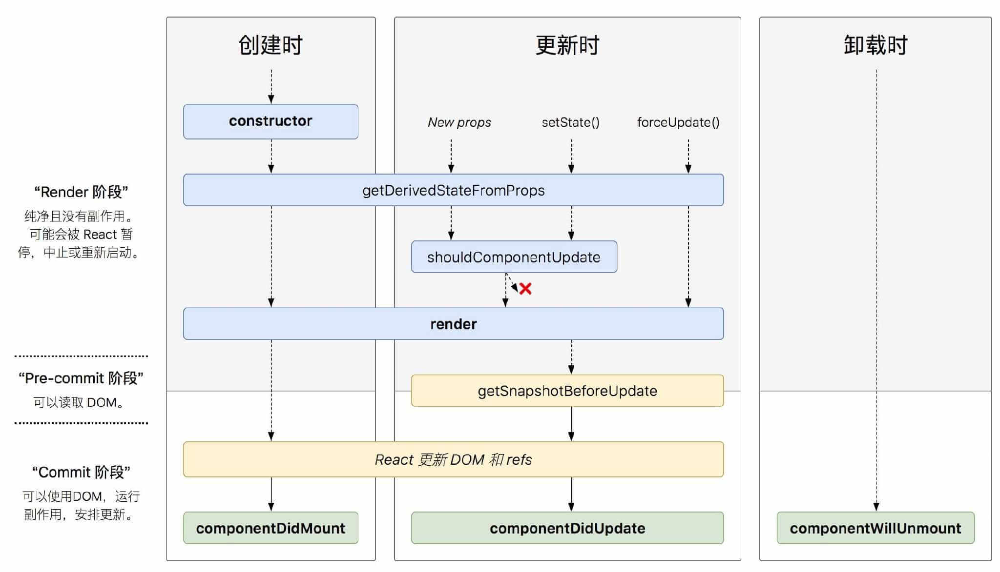
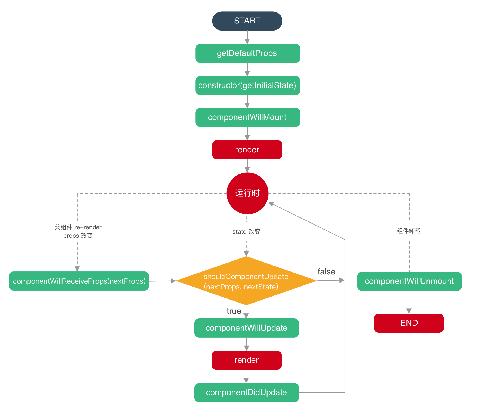
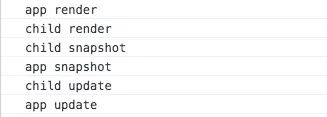

简介
在react v16.x 对生命周期有比较大的变化，可以通过下面的两张比较经典的图片来一览变化。
react v15.x
react v16.x

react v16.x 的生命周期是在 react v15.x 的生命周期基础上删减了一些生命周期，同时也新增了一些生命周期，删除的生命周期也可以通过 hook 来模拟实现。
React 16.3 新增的生命周期方法
- getDerivedStateFromProps()
- getSnapshotBeforeUpdate()
逐渐废弃的生命周期方法
- componentWillMount()
- componentWillReceiveProps()
- componentWillUpdate()
虽然废弃了这三个生命周期方法，但是为了向下兼容，将会做渐进式调整。（详情见#12028）
V16.3 并未删除这三个生命周期，同时还为它们新增以 UNSAFE_ 前缀为别名的三个函数UNSAFE_componentWillMount()、UNSAFE_componentWillReceiveProps()、UNSAFE_componentWillUpdate()。
在 16.4 版本给出警告将会弃用componentWillMount()、componentWillReceiveProps()、componentWillUpdate()三个函数
然后在 17 版本将会删除componentWillMount()、componentWillReceiveProps()、componentWillUpdate()这三个函数，会保留使用UNSAFE_componentWillMount()、UNSAFE_componentWillReceiveProps()、UNSAFE_componentWillUpdate()
一般生命周期分为三个阶段：
- 创建阶段（Mounting）
- 更新阶段（Updating）
- 卸载阶段（UnMounting）
从 React v16.x 开始，还对生命周期加入了错误处理（Error Handling）。
生命周期
其实用下面的这个图更能展现 v15.x 的流程图三个阶段的生命周期，图如下：

挂载(Mounting)阶段
- constructor
- static getDerivedStateFromProps()(新增)
- componentWillMount()/UNSAFE_componentWillMount()(废弃)
- render()
- componentDidMount()
constructor()
对于每个组件实例这个方法只会调用一次。
`constructor 参数接受两个参数props，context。
1 | constructor(props, context) { |
可以获取到父组件传下来的的props,context,如果你想在constructor构造函数内部(注意是内部哦，在组件其他地方是可以直接接收的)使用props或context,则需要传入，并传入super对象。
构造函数通常用于：
- 使用 this.state 来初始化 state
- 给事件处理函数绑定 this
ES6 子类的构造函数必须执行一次
super。React 如果构造函数中要使用 this.props，必须先执行 super(props)。
static getDerivedStateFromProps(nextProps, prevState)
static getDerivedStateFromProps(nextProps, prevState)
首先，这是一个静态方法生命周期钩子。也就是说，定义的时候得在方法前加一个static关键字，或者直接挂载到class类上。
简要区分一下实例方法和静态方法：
- 实例方法，挂载在 this 上或者挂载在 prototype 上，class 类不能直接访问该方法，使用 new 关键字实例化之后，实例可以访问该方法。
- 静态方法，直接挂载在 class 类上，或者使用新的关键字 static，实例无法直接访问该方法。
当创建时、接收新的 props 时、setState 时、forceUpdate 时会执行这个方法。
注意：v16.3 setState 时、forceUpdate 时不会执行这个方法，v16.4 修复了这个问题。
这个生命周期钩子也经历了一些波折，原本它是被设计成初始化、父组件更新和接收到 props才会触发，现在只要渲染就会触发，也就是初始化和更新阶段都会触发。
1 | class ExampleComponent extends React.Component { |
这个方法在建议尽量少用，只在必要的场景中使用，一般使用场景如下：
- 无条件的根据
props更新state - 当
props和state的不匹配情况更新state
componentWillMount
- 组件刚经历
constructor,初始完数据 - 组件还未进入
render，组件还未渲染完成，dom 还未渲染
在组件挂载到 DOM 前调用，且只会被调用一次，在这边调用 this.setState 不会引起组件重新渲染（如果是异步的话，会触发重新渲染）。
这是 React 不再推荐使用的 API。
render（会多次执行）
该方法会创建一个vnode，用来表示组件的输出。对于一个组件来讲，render方法是唯一一个必需的方法。render方法需要满足下面几点：
- 只能通过 this.props 和 this.state 访问数据（不能修改）
- 可以返回 null,false 或者任何
React组件 - 只能出现一个顶级组件，不能返回一组元素
- 不能改变组件的状态(state)
- 不能修改 DOM 的输出
可以返回下面几种类型：
componentDidMount
组件挂载到 DOM 后调用，且只会被调用一次。
一般用于下面的场景：
- 异步请求 ajax
- 添加事件绑定（注意在
componentWillUnmount中取消，以免造成内存泄漏）
更新(update)阶段
- componentWillReceiveProps()/UNSAFE_componentWillReceiveProps()(废弃)
- static getDerivedStateFromProps()(新增)
- shouldComponentUpdate(nextProps,nextState)
- componentWillUpdate(nextProps, nextState)/UNSAFE_componentWillUpdate(nextProps, nextState)(废弃)
- render()
- static getSnapshotBeforeUpdate()(新增)
- componentDidUpdate()
造成组件更新有两类(两种)：
- 调用 setState
- 组件本身调用 setState，无论 state 有没有变化。可通过 shouldComponentUpdate 方法优化。
1 | class Child extends Component { |
- 父组件重新 render
- 直接使用,每当父组件重新 render 导致的重传 props，子组件将直接跟着重新渲染，无论 props 是否有变化。可通过 shouldComponentUpdate 方法优化。
优化同上。
componentWillReceiveProps (nextProps)
componentWillReceiveProps`在接受父组件改变后的props需要重新渲染组件。
它接受一个参数：
- nextProps 通过对比 nextProps 和 this.props，将 nextProps setState 为当前组件的 state，从而重新渲染组件
该声明周期函数可能在两种情况下被触发：
- 组件接收到了新的属性。
- 组件没有收到新的属性，但是由于父组件重新渲染导致当前组件也被重新渲染。
同样，因为 Fiber 机制的引入，这个生命周期钩子有可能会多次触发。
static getDerivedStateFromProps()
见上文static getDerivedStateFromProps()
shouldComponentUpdate(nextProps,nextState)
在接收新的 props 或新的 state 时，在渲染前会触发该方法。该方法通过返回 true（触发重新渲染） 或者 false（不会触发重新渲染） 来确定是否需要触发新的渲染。
但是官方提倡我们使用 PureComponent 来减少重新渲染的次数而不是手工编写 shouldComponentUpdate 代码。因为未来版本 shouldComponentUpdate 返回 false，仍然可能导致组件重新的渲染。
Currently, if shouldComponentUpdate() returns false, then UNSAFE_componentWillUpdate(), render(), and componentDidUpdate() will not be invoked. In the future React may treat shouldComponentUpdate() as a hint rather than a strict directive, and returning false may still result in a re-rendering of the component.
PureComponent 自动实现了一个 shouldComponentUpdate 生命周期钩子。(浅比较)
componentWillUpdate(nextProps, nextState)/UNSAFE_componentWillUpdate(nextProps, nextState)
当接收到新的 props 或 state 时，在渲染前执行该方法。在这个方法中不能调用setState，因为这样会导致整个生命周期混乱。
因为在异步渲染中，可能会导致网络请求多次，引起一些性能问题，同事在这其中获取一些 dom 信息是不能保证准确性。
因为 Fiber 机制的引入，这个生命周期钩子有可能会多次调用。
static getSnapshotBeforeUpdate(prevProps, prevState)
这个方法在 render() 之后，componentDidUpdate() 之前调用。
两个参数prevProps 表示更新前的 props，prevState 表示更新前的 state返回值称为一个快照（snapshot），如果不需要 snapshot，则必须显示的返回 null —— 因为返回值将作为 componentDidUpdate() 的第三个参数使用。所以这个函数必须要配合 componentDidUpdate() 一起使用。
比如记录滚动的高度，代码如下：
1 | class ScrollingList extends React.Component { |
componentDidUpdate(prevProps, prevState, snapshot)
该方法在 getSnapshotBeforeUpdate 方法之后被调用，有三个参数 prevProps，prevState，snapshot，表示之前的 props，之前的 state，和 snapshot。第三个参数是 getSnapshotBeforeUpdate 返回的，所有 getSnapshotBeforeUpdate 时，必须要有 componentDidUpdate。
可以使用 setState，会触发 render，所以要注意判断，避免导致死循环。
卸载阶段（Unmounting）
- componentWillUnmount
componentWillUnmount
在组件卸载或者销毁前调用。这个方法主要用来做一些清理工作，例如：
- 取消事件绑定
- 订阅器
- 定时器
不能使用 setState
错误处理 Error Handling
这是 React v16.3.0 发布的 API。
- componentDidCatch(err, info)
任何子组件在渲染期间，生命周期方法中或者构造函数 constructor 发生错误时调用。
它主要用来捕获错误并进行相应处理，所以它的用法也比较特殊。但是它不能捕获下面的错误：
- 事件处理 (Event handlers) （因为事件处理不发生在 React 渲染时，报错不影响渲染）
- 异步代码 (Asynchronous code) (e.g. setTimeout or requestAnimationFrame callbacks)
- 服务端渲染 (Server side rendering)
- 错误边界本身(而不是子组件)抛出的错误
组件树生命周期调用顺序
应用初次挂载时，我们以render和componentDidMount为例，React 首先会调用根组件的render钩子，如果有子组件的话，依次调用子组件的render钩子，调用过程其实就是递归的顺序。
等所有组件的 render 钩子都递归执行完毕，这时候执行权在最后一个子组件手里，于是开始触发下一轮生命周期钩子，调用最后一个子组件的 componentDidMount 钩子，然后调用栈依次往上递归。

1 | app.render(); |
V16 生命周期函数用法建议
1 | class ExampleComponent extends React.Component { |